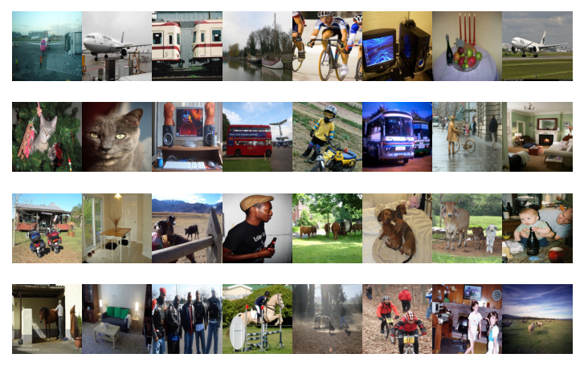

Dataset
VOC 2012 dataset
The training data provided consists of a set of images; each image has an annotation file giving a bounding box and object class label for each object in one of the twenty classes present in the image. Note that multiple objects from multiple classes may be present in the same image.
http://host.robots.ox.ac.uk/pascal/VOC/voc2012/
CelebFaces Attributes (CelebA) Dataset
CelebFaces Attributes Dataset (CelebA) is a large-scale face attributes dataset with more than 200K celebrity images, each with 40 attribute annotations. The images in this dataset cover large pose variations and background clutter. CelebA has large diversities & large quantities, including 202,599 number of face images. The dataset is employed as the training and test sets specifically for upscaling faces.
https://www.kaggle.com/datasets/jessicali9530/celeba-dataset